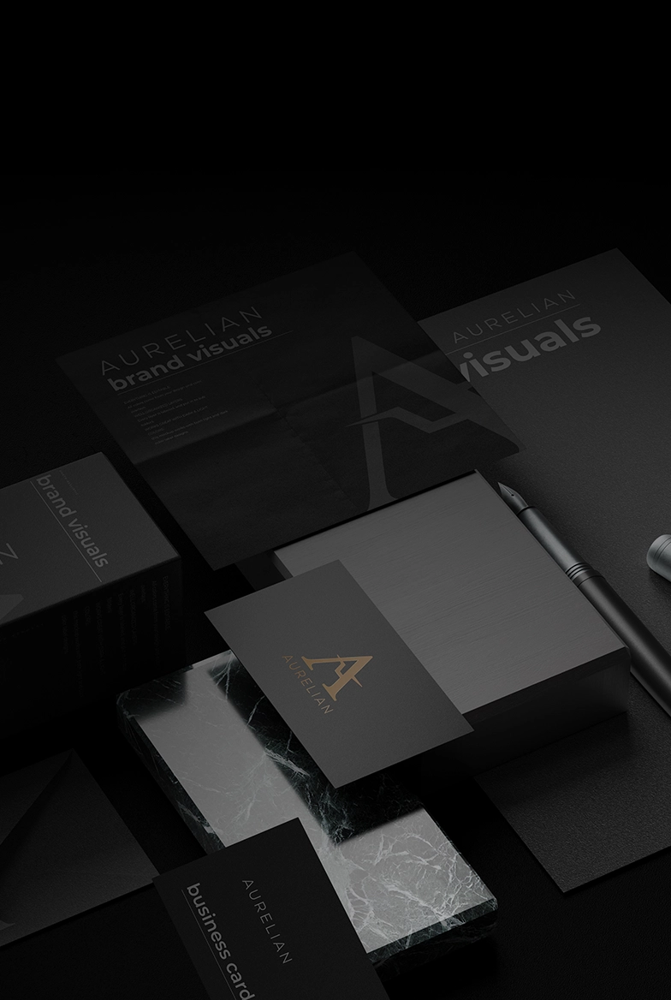
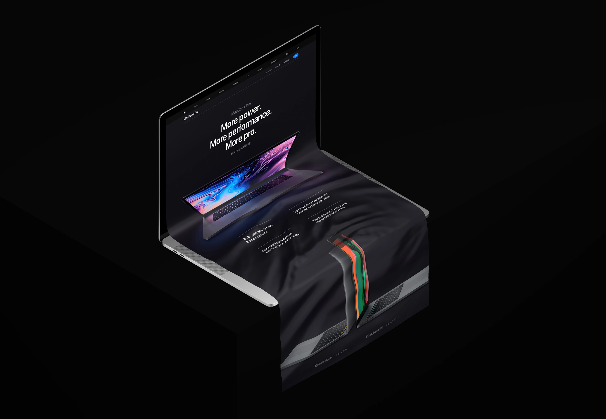
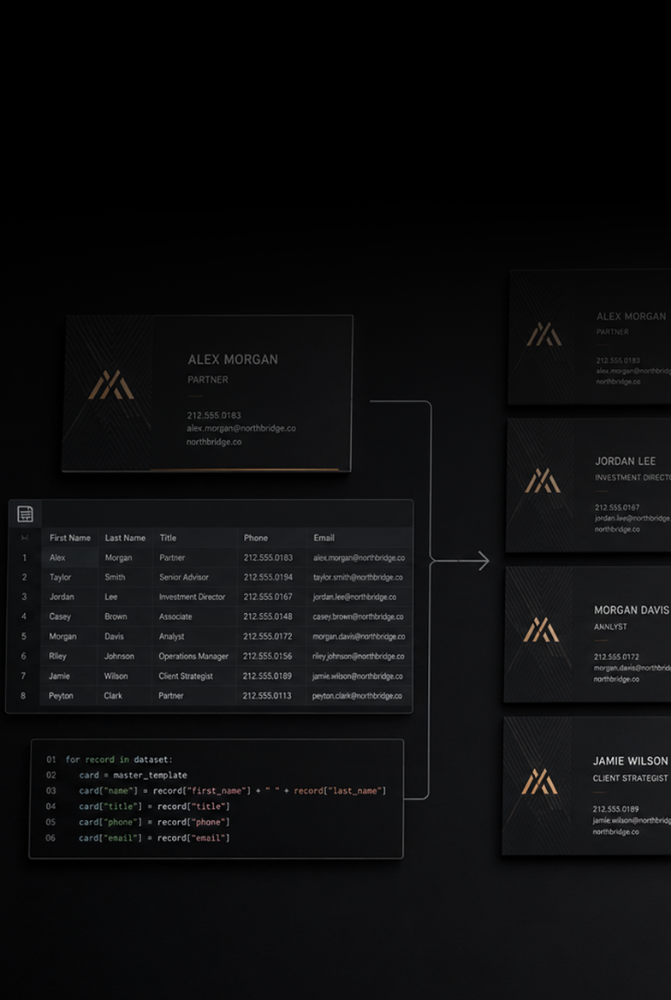

Szolgáltatásaim
Design, tartalom, web és kivitelezés egy rendszerben.
Négy terület, amelyek külön is működnek, de együtt adják meg a teljes vizuális jelenlétet. Az első ötlettől a kész, működő végeredményig minden elem ugyanabba az irányba dolgozik.
Tartalomgyártás
Részletek
Figyelmet nem kérünk. Tervezünk.

Brand & Visual Design
Részletek
Nem attól erős, hogy szép. Attól, hogy felismerhető.

Webdesign & UI/UX
Részletek
A weboldal bizalmat épít és konvertál.

Koncepció & Kivitelezés
Részletek